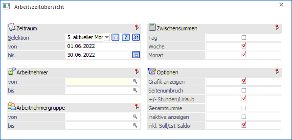
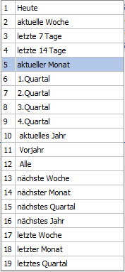
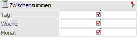
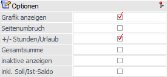
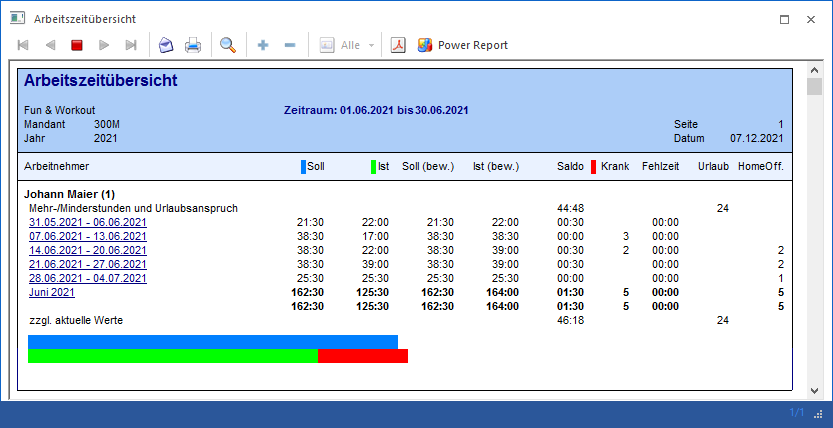
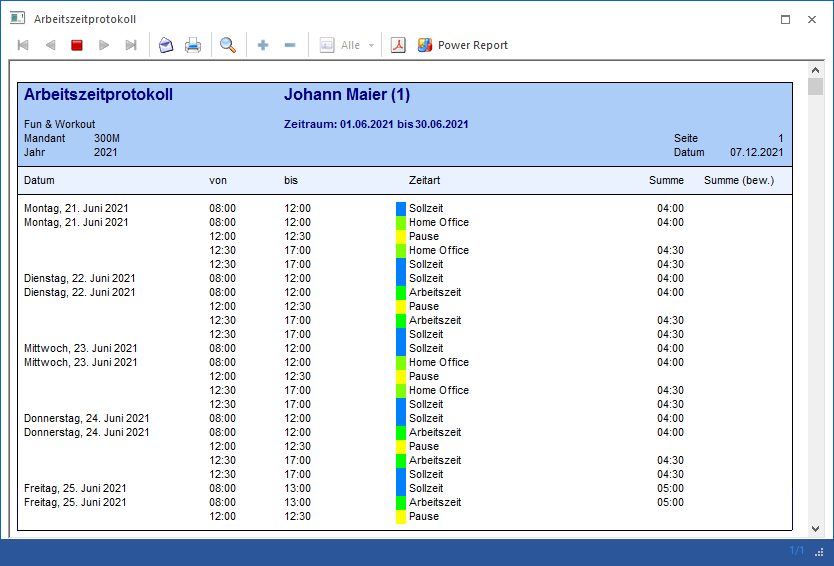
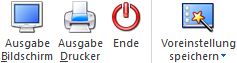

Im WinLine INFO unter dem Menüpunkt
1 SMART
1 Zeiterfassung
1 Arbeitszeitübersicht
kann eine Übersicht einzelner oder gesamter Arbeitnehmer bzw. Mitarbeiter ausgegeben werden.

Ø Selektion
Über eine Auswahllistbox kann der Zeitraum selektiert werden, dabei stehen folgende Zeitraumselektionen zur Verfügung:

Zusätzlich stehen noch 3 weitere Buttons, mit denen man den Zeitraum schnell ändern kann.
ü Heute
ü aktuelle Woche
ü aktueller Monat
Nach der Auswahl eines Zeitraums werden die Felder "von" und "bis" automatisch neu berechnet und können manuell noch editiert werden.
Hinweis
Wenn in der Selektion z.B. die Option "5 aktueller Monat" gewählt wird, der Monat ist aber noch nicht komplett erfasst, dann kann es mitunter sinnvoll sein, die Auswertung nur bis zum aktuellen Tag durchzuführen. Dazu kann der Button im Feld "bis" angeklickt werden, dadurch wird dann das aktuelle Datum übernommen.
Ø Arbeitnehmer von / bis
Über den Matchcode oder der Autovervollständigung kann auf die Arbeitnehmer bzw. Mitarbeiter eingrenzt werden.
Ø Arbeitnehmergruppe von / bis
Über den Matchcode oder der Autovervollständigung kann auf die Arbeitnehmergruppe eingrenzt werden.
Zwischensummen

In diesem Bereich kann eingestellt werden, wie häufig Zwischensummen erstellt werden sollen. Dabei stehen die folgenden Optionen zur Verfügung:
ü Tag
ü Woche
ü Monat
Optionen

Ø Grafik anzeigen
Beim Anwählen dieser Checkbox wird eine Balkengrafik der Ist- und Sollwerte angedruckt.
Ø Seitenumbruch
Pro Arbeitnehmer bzw. Mitarbeiter erfolgt ein Seitenumbruch.
Ø +/- Stunden/Urlaub
Beim Aktivieren dieser Checkbox werden Urlaub und Saldo der Vorzeiten im Bereich "Minder-/Mehrstunden und Urlaubsanspruch" angezeigt. Dabei wird beim Urlaub der Resturlaub aus dem WinLine LOHN verwendet und beim Saldo werden die im Arbeitnehmerstamm bzw. Mitarbeiterstamm eingetragene Salden berücksichtigt.
Ø Gesamtsumme
Beim Aktivieren der Checkbox wird eine Gesamtsumme angedruckt.
Ø inaktive anzeigen
Standardmäßig werden in der Auswertung nur aktive Arbeitnehmer/Mitarbeiter ausgewertet. Wenn diese Option aktiviert ist, werden auch inaktive Arbeitnehmer/Mitarbeiter berücksichtigt.
Ø inkl. Soll/Ist-Saldo
Diese Option kann nur in Zusammenhang mit der Option "+/- Stunden/Urlaub" verwendet werden. Wenn diese Option aktiviert ist, werden alle jeweiligen Saldi, die im AN-Stamm/MA-Stamm hinterlegt sind, entsprechend der Auswerteperioden berücksichtigt. Ist die Option nicht aktiviert, dann wird nur der Saldo berücksichtigt, der vor dem Beginn der Auswerteperiode hinterlegt ist (wenn die Option "+/- Stunden/Urlaub" aktiviert ist).
Beispiel
Beim AN/MA ist per 31.12.2021 ein Saldo von 10 hinterlegt, per 31.1.2022 ein Saldo von 0 und per 28.2.2022 ein Saldo per 15.
Wird nun eine Auswertung vom 1.1.2022 bis 28.2.2022 ausgegeben, dann wird die Auswertung (sofern die Option +/- Stunden/Urlaub gesetzt ist) in beiden Fällen mit 10 gestartet. Wenn aber die Option "inkl. Soll/Ist-Saldo" gesetzt ist, wird am 31.1.2022 ein Saldo von 0 und am 28.2.2022 ein Saldo von 15 angezeigt. Ist die Option "inkl. Soll/Ist-Saldo" nicht gesetzt, wird der tatsächliche Saldo anhand der Erfassungszeilen berechnet.
Hinweis 1
Wenn die Option "inkl. Soll/Ist-Saldo" und die Option "Tag" im Bereich Zwischensummen aktiviert ist, dann wird eine eigene Zeile mit dem Datum und dem Saldo in die Auswertung eingefügt.
Hinweis 2
Wenn bei der Datumsselektion kein "von"-Datum verwendet wird, dann werden die Soll/Ist-Saldi nicht berücksichtigt.
Je nach Selektion und Einstellung wird eine Auswertung ausgegeben, in dem für jeden Arbeitnehmer bzw. Mitarbeiter eine Summe
ü Soll
Andruck der Sollzeit für
den selektierten Zeitraum.
ü Ist
Andruck der Istzeit für den
selektierten Zeitraum.
ü Soll (bew.)
Anzeige der
gesamten Sollzeit inkl. Berücksichtigung des Bewertungsfaktors aus dem
Zeitartenstamm.
ü Ist (bew.)
Anzeige der gesamten
Istzeit inkl. Berücksichtigung des Bewertungsfaktors aus dem Zeitartenstamm.
ü Saldo
Anzeige des Saldos für
den selektierten Zeitraum.
ü Krank
Anzahl der Krankheitstage
für den selektierten Zeitraum.
ü Fehlzeit
Anzeige der Fehlzeit
für den selektierten Zeitraum.
ü Urlaub
Anzahl der Urlaubstage
für den selektierten Zeitraum.
ü HomeOff.
Anzahl der
HomeOffice-Tage. Das sind die Tage, wo eine Zeitart mit dem Arbeitszeitentyp
"Homeoffice" und keine weitere Arbeitszeit vom Arbeitszeittyp "Arbeitszeit"
vorhanden ist. Fehlzeiten wie Arztbesuch oder Urlaub haben keinen Einfluss auf
die HomeOffice-Tage-Berechnung.
gedruckt wird.

Hinweis
Bei den Einzelzeilen gibt es ein DrillDown auf den Zeitraum, bei dem dann alle Einzelzeilen in der Form des Arbeitszeitprotokolls inkl. der Summe und Summe (bew.) angezeigt.

Buttons

Ø Ausgabe Bildschirm
Mit Hilfe des Buttons "Ausgabe Bildschirm" oder der Taste F5 wird die Auswertung am Bildschirm ausgegeben.
Ø Ausgabe Drucker
Durch Anwahl des Buttons "Ausgabe Drucker" wird die Auswertung am Drucker ausgegeben.
Ø Ende
Durch Drücken des Buttons "Ende" bzw. der Taste ESC wird das Fenster geschlossen.
Ø Voreinstellung speichern
Durch Anwahl dieses Buttons erfolgt eine benutzerspezifische Speicherung aller im Fenster getätigten Einstellungen. Diese sogenannten "Voreinstellungen" können jederzeit